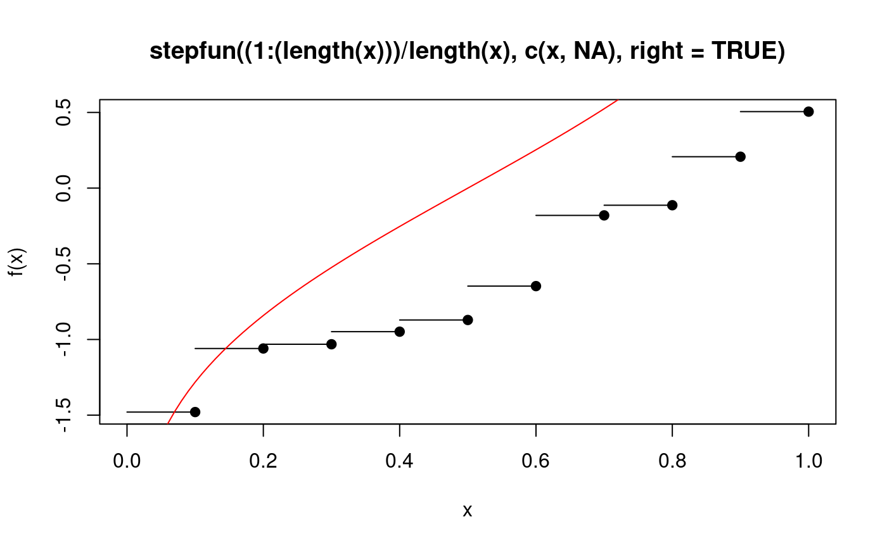
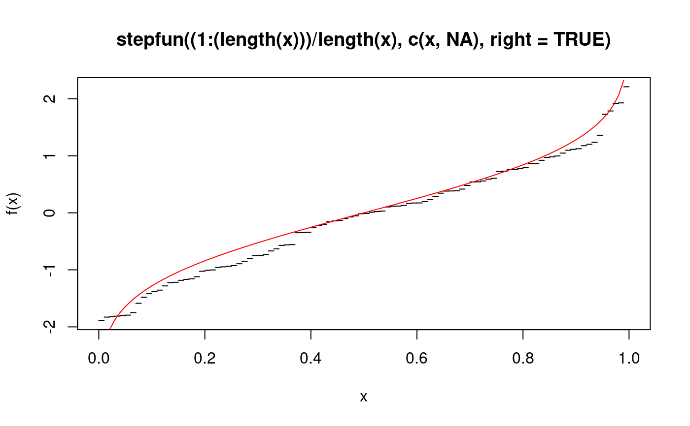

psi.plot.stepfun.RdPlot a stepfun object. The function is a modification of plot.stepfun from package stats but has an additional argument to force the domain of x-values rigidly.
psi.plot.stepfun(x, xval, xlim, ylim = range(c(y, Fn.kn)), xlab = "x", ylab = "f(x)", main = NULL, add = FALSE, verticals = TRUE, do.points = TRUE, pch = par("pch"), col.points = par("col"), cex.points = par("cex"), col.hor = par("col"), col.vert = par("col"), lty = par("lty"), lwd = par("lwd"), rigid.xlim = FALSE, ...)
| x | an R object inheriting from '"stepfun"', usually created by
|
|---|---|
| xlim | numeric(2), range of 'x' values to use, has sensible defaults. |
| add | logical; if 'TRUE' only add to an existing plot. |
| verticals | logical; if 'TRUE', draw vertical lines at steps. |
| rigid.xlim | If |
| xval | see help page of |
| ylim | see help page of |
| xlab | see help page of |
| ylab | see help page of |
| main | see help page of |
| do.points | see help page of |
| pch | see help page of |
| col.points | see help page of |
| cex.points | see help page of |
| col.hor | see help page of |
| col.vert | see help page of |
| lty | see help page of |
| lwd | see help page of |
| ... | see help page of |
The default method for plotting stepfun objects extends
slightly the domain requested by xlim. This is not always
desirable, especially if the function is not defined outside the
specified limits. This function has all the arguments of
plot.stepfun and does the same job with the additional option
to force the use of xlim as given by setting the argument
rigid.xlim to TRUE.
A list with two components
abscissa (x) values, including the two outermost ones.
y values `in between' the `t[]'.
R package "stats" for the code of the original
plot.stepfun.
This function is a modification of plot.stepfun from the
stats package as supplied with R~2.8.1. Some of the text in
this help page has been taken from the help page of
plot.stepfun.
# define empirical quantile functon as a step function. eqf <- function(x) stepfun((1:(length(x)))/length(x),c(x,NA),right=TRUE) # create eqf for a random sample. x <- sort(rnorm(10)) f1 <- eqf(x) # plot f1 psi.plot.stepfun(f1,xlim=c(0,1),rigid.xlim=TRUE)# plot(f1) would give an error because of the NA, so modify. eqf2 <- function(x) stepfun((1:(length(x)))/length(x),c(x,0),right=TRUE) f2 <- eqf2(x) # the default method for stepfun plots outside the domain of eqf. plot(f2,xlim=c(0,1),verticals=FALSE)psi.plot.stepfun(eqf(sort(rnorm(100))),xlim=c(0,1),rigid.xlim=TRUE, pch=19,verticals=FALSE,do.points=FALSE)